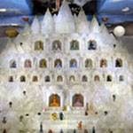

Five Paths. One Roof. One Light.
Five Jain traditions under one roof in Elmhurst, New York — founded 1976. Worship, learn, celebrate and give, together.
One Roof, Many Paths to Liberation
Every floor holds a different Jain tradition.
A serene shrine to the revered Dadagurus, crowned by the Asthapad Maha Tirth.
Learn more →
Marble idols of Adinathji and a quiet hall for Digambar worship and Das Lakshan Maha Parv.
Learn more →
Two traditions on one floor: the Murtipujak temple and the Upashray Lecture Hall for pravachan and scholars' talks.
Learn more →Upashray Lecture Hall →
Pathshala for children, the Ashtapad research library, an art gallery and the Bhojanshala community meal.
Learn more →
Take Darshan from Any Corner of the World
Mangal Aarti streams live from the Mahavir Swami Temple sanctum. Sign in to watch — no travel required to take darshan.
A Seat Is Waiting for You
Serve, learn, and belong — whatever your age or season of life. Pick a door and walk in.
Moments in Marble & Light




A Monthly Letter from the Sangha
Festival dates, community news, Pathshala updates, and what's new at the temple — once a month, nothing more.
No spam, unsubscribe anytime.
Carry the Temple in Your Pocket
Live darshan alerts, one-tap givings, the Jain calendar, and every announcement — the same information as this site, built for a phone.
- Live darshan alerts every morning
- Pay dues and donate in a few taps
- The full Jain calendar, with reminders
- Facility booking and event RSVPs
The JCA app is in preview — try the live screen alongside, or open the full walkthrough ↗. App Store and Google Play listings follow at launch.